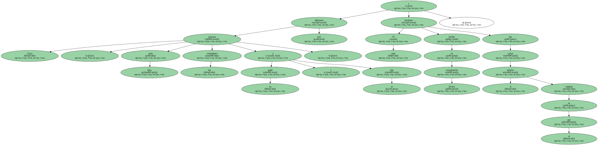
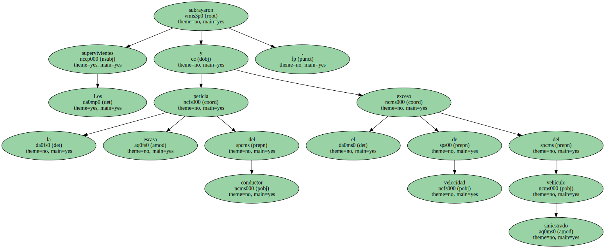
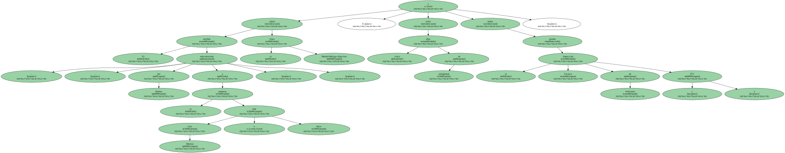
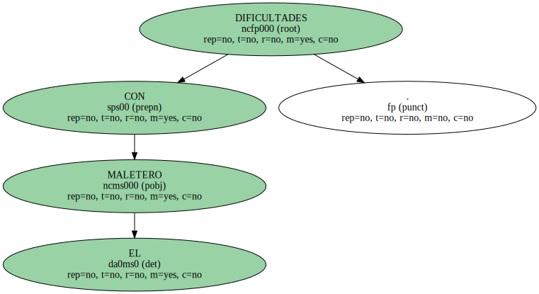
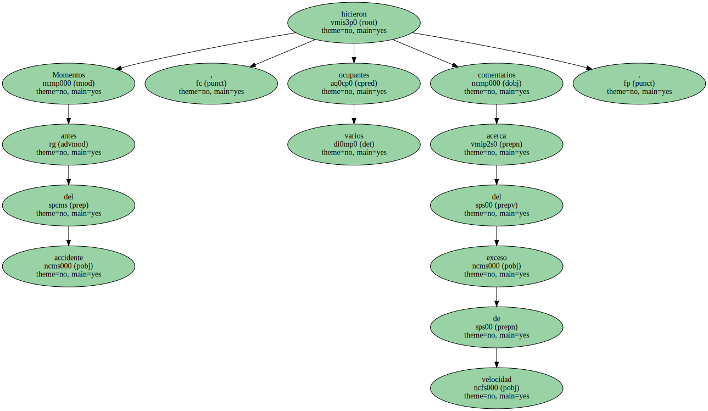
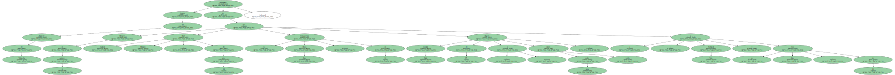
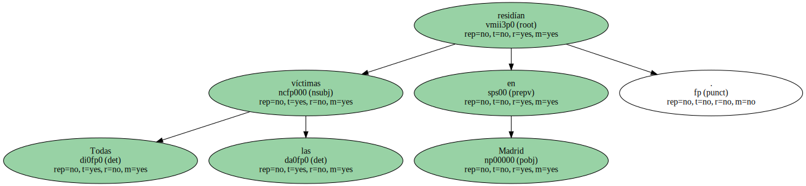

Cinco personas , entre ellos tres veinteañeros y un padre y su hijo , fallecieron ayer y otras 18 resultaron heridas de diversa consideración tras volcar el autobús en el que viajaban.
El siniestro , que se produjo a las 2.30 horas del Lunes , tuvo lugar en el kilómetro 217 de la autovía de Andalucía , a la altura de Santa Cruz de Mudela ( Ciudad Real ).

Los supervivientes subrayaron la escasa pericia del conductor y el exceso de velocidad del vehículo siniestrado.
El autobús - - subcontratado por Daibus a la empresa José Luis Moreno e hijos - - cubría la línea Madrid-Málaga-Algeciras , tenía cinco años de antigüedad y había pasado la Inspección Técnica de Vehículos ( ITV ).
A pesar de que el subdelegado del Gobierno en Ciudad Real , Jaime Lobo Asenjo , apuntó que la intensa lluvia pudo ser la causa del siniestro , los pasajeros responsabilizaron al conductor , que , sin embargo , fue calificado de " profesional experto " por el propietario del vehículo.
DIFICULTADES CON EL MALETERO.
Un ocupante del bus explicó que Miguel Angel Clemente , de 58 años , " apenas sabía abrir el maletero " y " tenía dificultades para poner la marcha atrás ".

Otro pasajero añadió que el conductor iba muy rápido.
Momentos antes del accidente , varios ocupantes hicieron comentarios acerca del exceso de velocidad.
El bus , matrícula M-9958-TK y ocupado por 36 viajeros , fue " el peor " y " el más viejo " de todos los que salieron en la noche del Lunes de la estación de Madrid , según la versión de los pasajeros , que destacaron que el vehículo partió con 20 minutos de retraso.
SEIS INGRESADOS.
Fuentes del Tanatorio de Valdepeñas informaron de que en el accidente fallecieron Daniel Guzmán Manzano , de 24 años ; la estadounidense Dayna Gray , de 24 ; Begoña González Galán , de 27 , y cuya madre resultó herida , y Mohamed Tazin y su hijo Alica , de 13.
Todas las víctimas residían en Madrid.
Los heridos fueron trasladados a diversos hospitales cercanos en Manzanares y Valdepeñas , en los que a última hora de la noche de ayer continuaban ingresados seis pasajeros.

La más grave es Lilian Montoya Osorio , de 37 años y de nacionalidad colombiana , que fue operada de sus contusiones en el brazo , mano y pierna , según explicó la directora del centro de Valdepeñas.